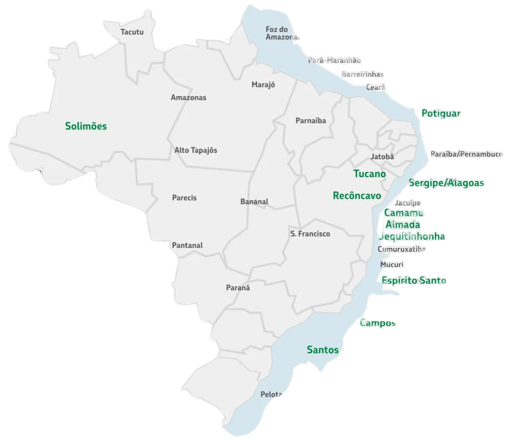
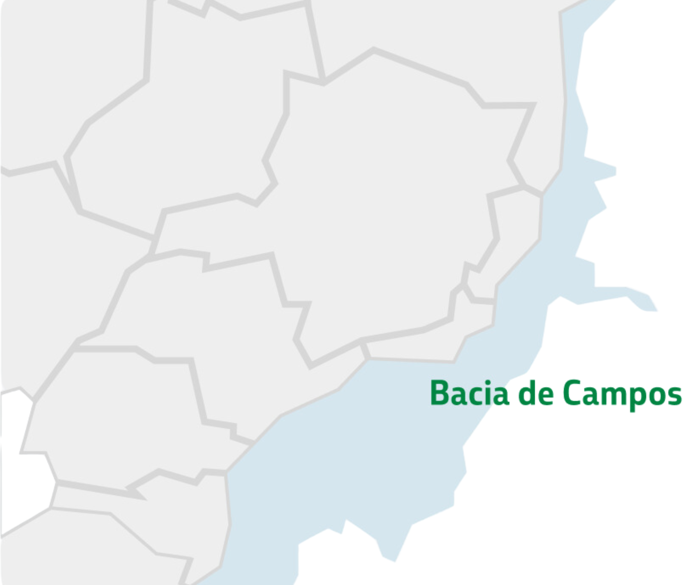

Os dados geoespaciais desempenham um papel fundamental na eficiente exploração e gestão de
recursos naturais, especialmente no setor petrolífero. Essas informações, que incluem bacias, blocos,
campos e poços petrolíferos, oferecem insights valiosos para a indústria de energia.
BACIA DE SANTOS
A Bacia de Santos sempre esteve à frente do seu tempo. |
BACIA DE CAMPOS
Se hoje somos líderes mundiais em tecnologia para exploração |
OUTRAS BACIAS
Além das bacias de Campos e de Santos, |
MAPA DE ATUAÇÃO |
MAPA DE ATUAÇÃO |
MAPA DE ATUAÇÃO |
São as áreas nas regiões de bacias sedimentares, selecionadas e delimitadas por autoridades
do setor de energia de cada país, a serem prospectadas por acumulações,
e na sequência, exploradas com o objetivo de produzir petróleo e gás natural
por empresas de petróleo sob as condições dos regimes fiscais em vigor.
Estão disponíveis para declaração de interesse 955 blocos com risco exploratório e a área de Japiim.
Os 955 blocos estão localizados em 65 setores de 17 bacias sedimentares brasileiras, totalizando 380.251,28 km²,
sendo 394 blocos em bacias terrestres, além de 561 blocos em bacias marítimas.